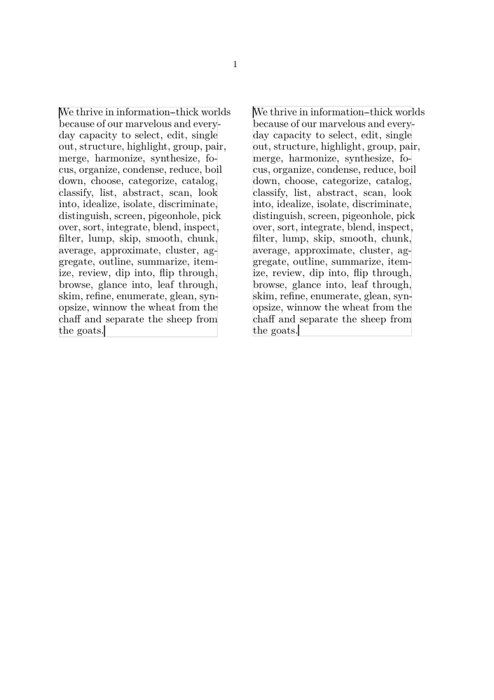

In order to preserve a constant interlinespace (esp. when using a quite small one, in footnotes or such) it can be sometimes necessary to change the predefined ratio of height/depth:
-
\starttext \hbox to \hsize \bgroup \showstruts \ruledvtop \bgroup \hsize.45\hsize \switchtobodyfont[rm,9pt]\setupinterlinespace[line=9.8pt] \begstrut \input tufte \endstrut \endgraf \egroup \hss \ruledvtop \bgroup \hsize.45\hsize \switchtobodyfont[rm,9pt]\setupinterlinespace[line=9.8pt,height=.79,depth=.21] \begstrut \input tufte \endstrut \endgraf \egroup \egroup \stoptext
- 
(The values .79 and .21 in the example are dependent on the actual font used.)